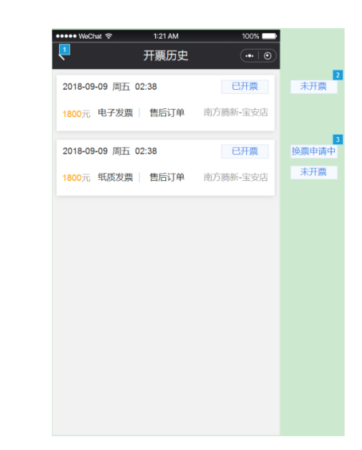
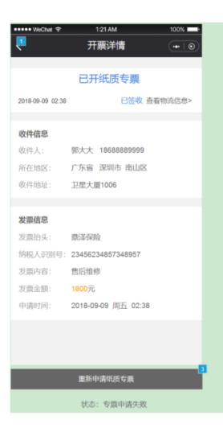

已作废
已冲红
C端小程序>我的>开发票>开票记录
1、增加“已作废”和“已冲红”状态
1.1、在云平台状态为：“已作废、已开红字电子普票、已开红字纸质普票、已开红字纸质专票”的发票，在小程序端对应的状态流转为：已作废、已冲红
1.2、云平台开票状态为：“作废申请中、作废申请失败、冲红申请中、冲红申请失败”状态的发票，在小程序上状态保持为“已开票”




作废原因
XXXXXXXXXXXXXXXXXXXXXXXXXXXXXXXXXXXXXX
3、【开票详情】页增加作废原因字段
3.1、已作废或已冲红的发票，增加作废原因字段展示，取云平台用户在发起作废或冲红时填写的作废原因或失败原因字段
2、【开票详情】页展示完整的开票状态字段
2.1、已冲红：已开红字电子普票、已开红字纸质普票、已开红字纸质专票


4、已冲红或已作废的发票，允许小程序用户重新就该发票对应的工单重新申请开具发票
4.1、开票状态为：纸质专用发票冲红后，其对应的工单无法重新开票